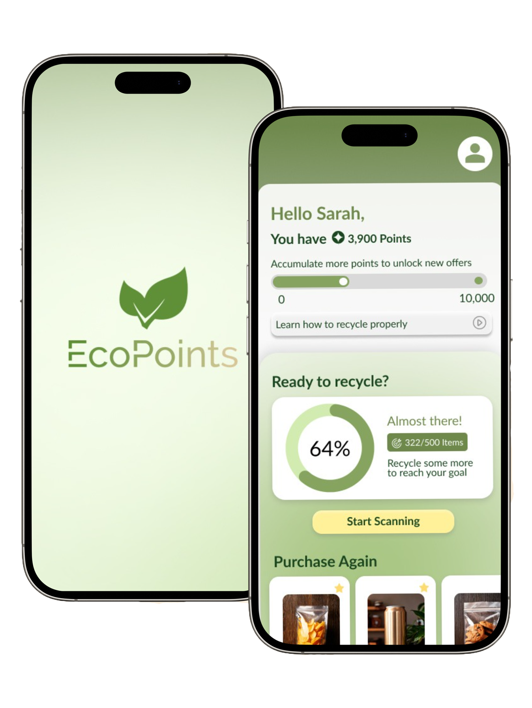
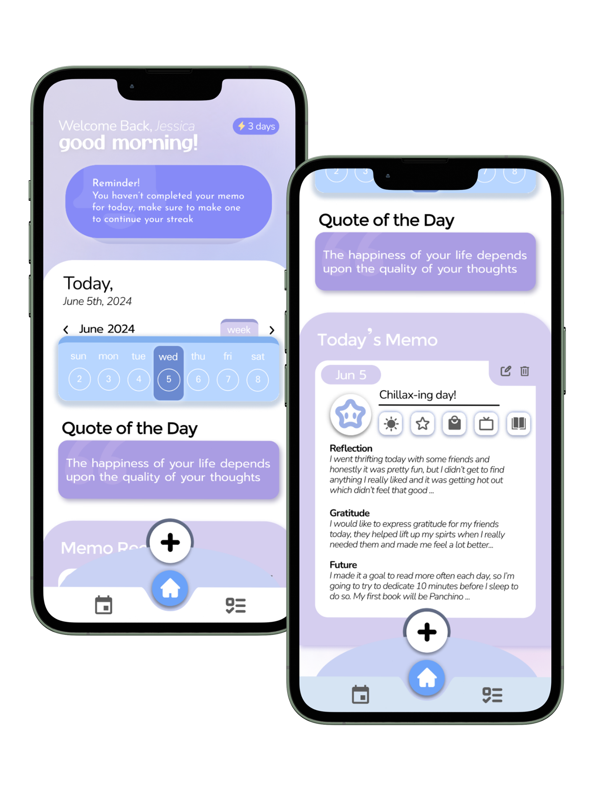
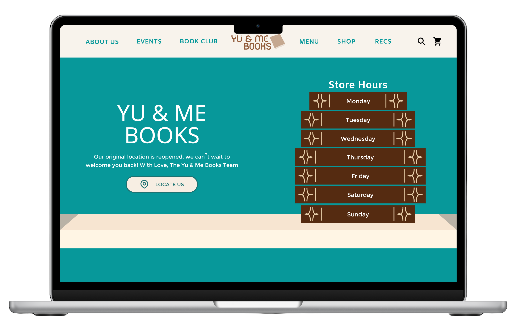

Here are three of my selected works as a UX/UI Designer and Project Manager ranging from website to mobile app designs

EcoPoints | Multimedia Product
Constructed to encourage college students to recycle by gamifying the process such that they redeem credit for vending machines each time they properly recycle through record on mobile apps.
👤 Role: Project Manager / User Researcher / UI Designer
📍 Pins: User Research, Product Design, Design Process, Figma

Memo | Mobile App Design
Designed a guided journaling app to help users identify the emotions they felt during a day and to express gratitude for something positive that happened to them.
👤 Role: UI Designer, UX Researcher
📍 Pins: Mobile Design, Figma

YU&ME Bookstore | Website Redesign
Revamped website for a local bookstore with intentions of creating better information hierarchy and adding a comprehendible flow between the pages of the website.
👤 Role: UI Designer
📍 Pins: UI Design, User Persona, Figma, Heuristic Review